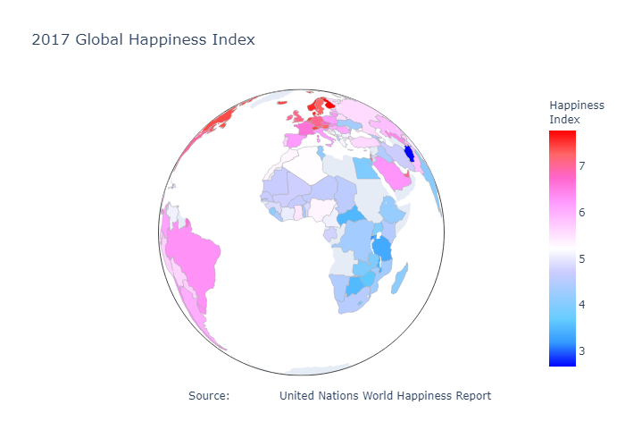

Bootcamp group project: The Pursuit of Happiness

Project Specifics
Utilize Python, Pandas, Numpy and, Matplotlib and other visualization libraries to analyze and answer the following questions:
- How does the Happiness Index vary across the globe?
- Does economic health correlate with happiness?
- What other factors impact happiness?
- How do happy countries relative to their economic health rank on the Happiness Index variables?
- How do happy countries relative to their economic health rank on other factors correlated with happiness?
- How does Canada perform on the Happiness Index variables and how does it compare to the US?
- Is happiness changing over time?
Links: